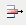
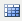
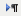
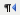
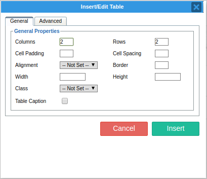
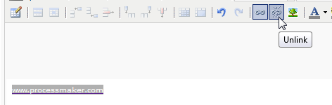
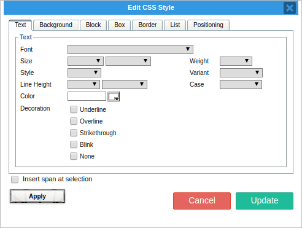
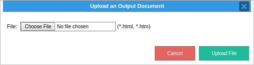

Overview
TinyMCE, also known as the Tiny Moxiecode Content Editor, has been integrated from this version in order to standardize the existing WYSIWYG HTML editors used within ProcessMaker. Unlike the editor used on previous versions, this editor optimizes the use of the components to be inserted in a Dynaform, personalizing final view and making it easy-to-use. Moreover, some plugins were created to give templates a better functionality when elements needs to be added; for example, the integration with the picker variable,system and process variables can be used inside the template. Moreover, this editor is compatible with templates created on previous versions of ProcessMaker, without altering the HTML code.
Give this editor a try before installing or upgrading ProcessMaker.
Implementation of TinyMCE
TinyMCE editor will be integrated to be used on:
- Creation of templates for Output Documents.
- Creation of Email Templates.
- Creation of Dynaform HTML Templates.
With the following components:
- Possibility to load templates form an external file.
- New variable picker which was deprecated on the editor used on previous versions
- Dynaform Grids wizard, replacing the old code used to replicate an entire grid from a dynaform inside a template.
Compatibility with:
- RTL Language.
- Firefox, Google Chrome and Internet Explorer browsers.
- Chinese characters.
- Select font, bold, italic, cut, copy, paste, underline, align, indentation, quotation marks, table controls, undo, hyperlinks, broke links, insert images (only links), font color, text background color, styles (css), line, delete styles and content, guide lines, subscript, superscript, paragraph alignment.
- See HTML code.
Creation and integration with the following plugins:
The HTML Toolbar
The toolbar integrated on the editor allows users to to customize templates using different elements such us: images, tables, subscript, superscript, font styles, etc.

 Upload File : Load an html template from a file. See Plugin tinyMCE Simple Uploader.
Upload File : Load an html template from a file. See Plugin tinyMCE Simple Uploader. Variable Picker: Add a Process or System variable inside a template. See Plugin tinyMCE Variable Picker.
Variable Picker: Add a Process or System variable inside a template. See Plugin tinyMCE Variable Picker. PMGrids: Create tables with Grid data following the Output Documents syntaxis >@gridname ... <@gridname. See Plugin Grid Wizard.
PMGrids: Create tables with Grid data following the Output Documents syntaxis >@gridname ... <@gridname. See Plugin Grid Wizard.Available Version: ProcessMaker 2.x and earlier.
 Bold To convert text to boldface, select the desired text, then click this icon. Also it can be used the shortcut key cntrl+B.
Bold To convert text to boldface, select the desired text, then click this icon. Also it can be used the shortcut key cntrl+B. Italic: To convert text to italics, select the desired text, then click this icon. Also it can be used the shortcut key cntrl+I.
Italic: To convert text to italics, select the desired text, then click this icon. Also it can be used the shortcut key cntrl+I. Underline: To underline text, select the desired text, then click this icon. Also it can be used the shortcut key cntrl+U.
Underline: To underline text, select the desired text, then click this icon. Also it can be used the shortcut key cntrl+U. Align Left: To left align a paragraph or any other HTML element, click to set the cursor inside the element in the HTML View area, then click this icon.
Align Left: To left align a paragraph or any other HTML element, click to set the cursor inside the element in the HTML View area, then click this icon.- Center Align: To center a paragraph or other HTML elements, click to set the cursor inside the element in the HTML View area, then click this icon..
 Right Align: To right align a paragraph or other HTML elements, click to set the cursor inside the element in the HTML View area, then click this icon. .
Right Align: To right align a paragraph or other HTML elements, click to set the cursor inside the element in the HTML View area, then click this icon. . Justify: To justify a paragraph or another HTML element, so it fully extends between the right and left margins, click to set the cursor inside the element in the HTML View area, then click this icon. Multiple HTML elements can be justified at once by selecting them and then clicking this icon.
Justify: To justify a paragraph or another HTML element, so it fully extends between the right and left margins, click to set the cursor inside the element in the HTML View area, then click this icon. Multiple HTML elements can be justified at once by selecting them and then clicking this icon. Font Type: To choose a specific font type from the dropdown list, select the desired text or paragraph, and choose a font type from the list. Note that these fonts are not customizable and they are defined for the Email templates.
Font Type: To choose a specific font type from the dropdown list, select the desired text or paragraph, and choose a font type from the list. Note that these fonts are not customizable and they are defined for the Email templates. Font Size: To choose a specific font size from the dropdown list, select the desired text or paragraph, and choose a font size from the list.
Font Size: To choose a specific font size from the dropdown list, select the desired text or paragraph, and choose a font size from the list. Cut:
Cut: Note: This icon probably will not work on Chrome. For Firefox, change its configuration visit this link. Also use CTRL + X to cut elements in the HTML View area.
 Copy:
Copy: Note: This icon probably will not work on Chrome. For Firefox, change its configuration visit this link. Use CTRL + C to copy elements in the HTML View area.
 Paste:
Paste:Note: This icon probably will not work on Chrome. For Firefox, change its configuration visit this link. Use CTRL + V to paste elements in the HTML View area.
 Insert/Remove bullet list: Click this icon to select a bullet point from the dropdown to be added to the current paragraph. Default •, circle ?, disc • and square ? bullets are available to be used. Select multiple paragraphs to convert them into a bullet list.
Insert/Remove bullet list: Click this icon to select a bullet point from the dropdown to be added to the current paragraph. Default •, circle ?, disc • and square ? bullets are available to be used. Select multiple paragraphs to convert them into a bullet list. Insert/Remove Numbered List: Click this icon to add a numbered list to the current paragraph. Select multiple paragraphs to convert them into a numbered list. Default 1. Lower Alpha a., Lower Greek, a., Lower Roman i., Upper Alpha A. and Upper Roman I..
Insert/Remove Numbered List: Click this icon to add a numbered list to the current paragraph. Select multiple paragraphs to convert them into a numbered list. Default 1. Lower Alpha a., Lower Greek, a., Lower Roman i., Upper Alpha A. and Upper Roman I.. Decrease Indent: Click this icon to decrease the indent of the current paragraph. Select multiple paragraphs to decrease the indent of all at the same time.
Decrease Indent: Click this icon to decrease the indent of the current paragraph. Select multiple paragraphs to decrease the indent of all at the same time. Increase Indent: Click this icon to increase the indent of the current paragraph. Select multiple paragraphs to indent all at the same time.
Increase Indent: Click this icon to increase the indent of the current paragraph. Select multiple paragraphs to indent all at the same time. Block Quote: Click this icon to insert block quotations. As it is a block-level element, is useful, for example, to insert long quotations that are divided in paragraphs. User agents usually render the text inside this element indented. Select multiple paragraph to insert block quotations.
Block Quote: Click this icon to insert block quotations. As it is a block-level element, is useful, for example, to insert long quotations that are divided in paragraphs. User agents usually render the text inside this element indented. Select multiple paragraph to insert block quotations. Insert/Edit Table: Click on this icon to insert or edit a table. See Inserting and Editing Tables description.
Insert/Edit Table: Click on this icon to insert or edit a table. See Inserting and Editing Tables description. Table Row Properties: Click on this icon to set properties on an inserted table. This icon will be disabled by default, to enable it select a table which will be modified and the icon will be enabled. See Table Row Properties.
Table Row Properties: Click on this icon to set properties on an inserted table. This icon will be disabled by default, to enable it select a table which will be modified and the icon will be enabled. See Table Row Properties.- Table Cell Properties: Click on this icon to set properties for a specif cell of an inserted table. to enable it select a table which will be modified and the icon will be enabled. SeeTable Cell Properties.
 Insert Row Before: Click on this icon to insert a row before the select one. To enable it select a the row of the table on which this new row will be inserted. Inserting and Editing Tables description.
Insert Row Before: Click on this icon to insert a row before the select one. To enable it select a the row of the table on which this new row will be inserted. Inserting and Editing Tables description. Insert Column After: Click on this icon to insert a row after the select one. To enable it select a the row of the table on which this new row will be inserted. Inserting and Editing Tables description.
Insert Column After: Click on this icon to insert a row after the select one. To enable it select a the row of the table on which this new row will be inserted. Inserting and Editing Tables description.-  Delete Row: Click on this icon to delete a selected row from a table. Inserting and Editing Tables description.
-  Split Merged Table Cell: Click on this icon to split merged cells from a table. Select the row which was merged. Inserting and Editing Tables description.
- Merge Table Cells: Click on this icon to merge cells from a table. Select two cells on a table and click on this icon to merge them. Inserting and Editing Tables description.
- Undo: Click to undo the last change to the HTML. Multiple undo actions are permitted. Note that switching out of the HTML tab will clear the undo stack, so don't switch to Previewmode and then try to undo HTML changes afterwards. Also use CTRL + Z to undo elements from the text area.
 Redo: Click to redo the last change to the HTML. Multiple redo actions are permitted. Also use CTRL + y to redo elements form the text area.
Redo: Click to redo the last change to the HTML. Multiple redo actions are permitted. Also use CTRL + y to redo elements form the text area. Insert/Edit Link: Disabled by default. Click on this icon to insert or edit an existing Link. Select text which will be converted into a Link and click on this icon to edit its properties. See Linking to Other Pages Description.
Insert/Edit Link: Disabled by default. Click on this icon to insert or edit an existing Link. Select text which will be converted into a Link and click on this icon to edit its properties. See Linking to Other Pages Description. Unlink: Disabled by default. Click on this icon to remove an existing link. Select link which will be removed and click on this icon. See Linking to Other Pages Description.
Unlink: Disabled by default. Click on this icon to remove an existing link. Select link which will be removed and click on this icon. See Linking to Other Pages Description. Insert/Edit Image: Click on this icon to insert or edit an existing image. See #Inserting_Images Inserting and Editing Image description.
Insert/Edit Image: Click on this icon to insert or edit an existing image. See #Inserting_Images Inserting and Editing Image description. Select Text Color: To change the font color, select text and click this icon to select a color from the dropdown list. More colors from the Picker, Palette or by using anhexadecimal value.
Select Text Color: To change the font color, select text and click this icon to select a color from the dropdown list. More colors from the Picker, Palette or by using anhexadecimal value. Select Background Color: To change the background color. Select a text or paragraph and click on this icon to select a specific color form the dropdown list displayed. More colors from the Picker, Palette or by using an hexadecimal value.
Select Background Color: To change the background color. Select a text or paragraph and click on this icon to select a specific color form the dropdown list displayed. More colors from the Picker, Palette or by using an hexadecimal value. Edit Css Style: To change CSS styles from a text or paragraph selected. See Editing Css Style.
Edit Css Style: To change CSS styles from a text or paragraph selected. See Editing Css Style. Insert Horizontal Line: Click to add a horizontal line to separate texts or paragraphs.
Insert Horizontal Line: Click to add a horizontal line to separate texts or paragraphs. Remove Formatting: To remove format inserted in the template. Select text or paragraph and click on this icon to remove the format applied.
Remove Formatting: To remove format inserted in the template. Select text or paragraph and click on this icon to remove the format applied. Show/Hide Guidelines/Invisible Elements: To show or hide Guidelines which help to follow an ordered structure while templates is being created.
Show/Hide Guidelines/Invisible Elements: To show or hide Guidelines which help to follow an ordered structure while templates is being created.- Superscript: To convert text to superscript, select the text and click this icon.
 Subscript: To convert text to subscript, select the text and click this icon.
Subscript: To convert text to subscript, select the text and click this icon.-  Direction Left To Right: To enter or change the text direction to Left to Right (LTR) used by most languages in the world.
-  Direction Right To Left: To enter or change the text direction to Right To Left(RTL) used for languages that read right to left.
 Edit HTML source: A pop-up displays showing the HTML source code, allowing you to edit the HTML source code.
Edit HTML source: A pop-up displays showing the HTML source code, allowing you to edit the HTML source code.
Insert/Edit Tables
Table Properties
Tables are handy for tabular data and lists. To add a table, put your cursor where you want it and click on  Icon to insert a new table, the Insert/Modify table panel will open:
Icon to insert a new table, the Insert/Modify table panel will open:

General Properties Tab
- Columns: Enter the number of columns to be inserted.
- Rows: Enter the number of rows to be inserted.
- Cell Padding: Sets the amount of space between the contents of the cell and the cell wall.
- Cell Spacing: Controls the space between table cells.
- Border: Establishes the size of the border surrounding the table.
- Width/Height: Establishes the width and eighth of the table. If left blank, by default the table will take up as much room as it needs. However it is possible to restrict this to either:
- A certain size in pixels, in which case enter the size followed by px (e.g. 200px) - A size relative to the size of your page, in which case enter the percentage followed by % (e.g. 50%)
- Class: If a page has one or more CSS style classes defined for showing tables, you can select this here. Otherwise, leave this as "not set" to inherit the default style.
- Table Caption: When checked, this will cause the table to have an additional row that spans the top of your table, allowing you to give it a caption (in effect, a title).
General Properties Tab
- Language Direction: choose the direction of the text inserted on the table.
- Border color: change the color of the border by choosing one color form the palette.
- Background Color: change the color of the background of the table by choosing a color from the palette.
Table Row Properties
To edit the current row's properties, click the Edit Row Properties button. The following window will display:

General Properties Tab
- There are three options available in this drop-down:
- Table Head: Makes this row the header row of your table. - Table Body: Used for the main content rows in your table. Chosen by default. - Table Foot: Specifies this row as the table footer.
- Alignment: Specifies the horizontal alignment of the text on this row.
- Vertical Alignment: Specifies the vertical alignment of your text within this row.
- Class: Specific CSS classes that affect table rows, select one from this drop-down. Otherwise, leave this as "Not Set".
- Height: Specify the height of the table row. If left blank, by default the row will take up as much room as it needs. However it is possible to restrict this to either:
- A certain size in pixels, in which case enter the size followed by px (e.g. 25px) - A size relative to the size of your page, in which case enter the percentage followed by % (e.g. 50%)
Table Cell Properties
To edit the current table cell properties, click the Edit Cell Properties button. The following window will display:

- Alignment: Specifies the horizontal alignment of your text within this cell.
- Vertical alignment: Specifies the vertical alignment of your text within this cell.
- Cell Type: There are two options available in this drop-down:
- Head: Makes this cell part of the header of your table.
- Data: Used for the main content cells in your table.
Width/Height: To specify the width and height of this cell. If left blank, by default the table cell will take up as much room as it needs. However it is possible to restrict this to either:
- A certain size in pixels, in which case enter the size followed by px (e.g. 200px)
- A size relative to the size of your page, in which case enter the percentage followed by % (e.g. 50%)
Class: If you have specific CSS classes that affect table cells, you can select one from this drop-down. Otherwise, leave this as "Not Set".
To apply changes, click the Update button.
Linking to Other Pages
If it is required to link to another page, either within a web site or to an external web site, create a "hyperlink" to this page. Hyperlinks can also be used in conjunction with anchors to "jump" to a particular section of a page. Hyperlinks are usually represented in blue text and underlined, e.g. hyperlink.
To create a hyperlink, first select the text to be used for the hyperlink, by selecting it with the mouse. Next, click on the Insert/Edit Link button, the following window will display:

- Link URL: Type in the address of the web page you wish to link to, e.g.: http://www.google.com
- Target: This specifies where the linked web page should be opened.
- If it is required the page to replace the one the user is currently on, select Open in this window / frame; - If it is required the page to be opened in a new window or browser, so the current page is still available, select Open in new window (_blank)
As a general rule, pages that are on a web site should use the Open in this window / frame; Pages that are on an external web site should use the Open in new window (_blank) option.
To create a link, click the Insert button, or Cancel to cancel the link creation.
- Removing Links: To remove a link, simply highlight the linked text with the mouse. Then click on the Unlink button:

Inserting Images
To insert an image on to your page, click the Insert/Edit Image button. The following window will display:

General Tab:
- Image URL: This specifies the location (on the internet) of the image to be shown. In most cases, so type the URL on this field. Only images from Internet can be uploaded since there is no option to choose and image from a local computer or a server. However, this can be solved by dragging & drop the image to be inserted on the editor, when the image is inserted click on to edit its properties.
- Image Description & Title: You should enter a description and title of your image here, so that users who have images turned off, or are using disability aids such as screen readers will know what image is being shown.
- Preview: A preview of your image will be shown here. This is to ensure users have picked the correct image.
Appearance Tab:
- Alignment: This allows users to specify how the image will be aligned in relation to the text on your page.
- Dimensions: This option allows you to specify the display size of your image in pixels. When checked, the "constrain proportions" checkbox will automatically calculate the height (if a width is entered), or width (if a height is entered) of the image. This is to ensure the proportions of the image remain intact. Unchecking this option, will allow users to stretch the image horizontally or vertically.
Note: Using this option to make large images look smaller is a bad idea. Regardless of the size an image is shown at, when viewing the page the whole image will need to be downloaded at its original size. Consider shrinking the image to the required size, and uploading it again. This will speed up the loading of the page.
- Vertical Space/Horizontal: These options allow you to specify, in pixels, the amount of blank border space around your image.
- Border: Should you require a border (i.e. a box) around your image, specify its thickness in pixels here.
- Style: Should you wish your image to conform to a particular CSS Style class, you should type in the name of that class here.
Once the image has been inserted, it can be resized it in-place within the editor area.
Clicking on the image, will make the resize handles appear:

Inserting CSS Styles
It is possible to give CSS to give texts different styles. Select text or paragraph which will have a different style and click on Edit CSS Style icon and the following window will display:

- Font: Select font type form the dropdown. Also is possible to use a value, eg. Coronetscript, this new value will be saved on the dropdropwn with the possibility to be chosen on other texts or paragraphs. List of available fonts for CSS are detailed on this documentation.
- Size : To choose a specific font size from the dropdown list. Values from 9 to larger can be selected. Also it is possible to enter a value which will be saved on the dropdown list. Font size are expressed on: pixels, points, inches, centimeters, millimeters, picas, ems, exs, %.
- Weight: Choose a value from the list to change the font weight, Values from normal to 900.
- Style: Choose a style to be applied the text or a paragraph. Available styles: normal, italic. and oblique and a new value can be entered.
- Line Height: Increase the line space between paragraphs. Expressed on: pixels, points, inches, centimeters, millimeters, picas, ems, exs, %.
- Color: Choose the color of the text or paragraph selected. Choose a color from the picker, palette or by specifying a name eg. Brown. Also a hex color can be entered.
- Variant: choose a variant to be applied on the selected text. Available variants are: normal, and SMALL-CAPS.
- Case: Transform text in different elements: UPPERCASE, Capitalize and lowercase.
- Decoration: Use the text-decoration property to add underline, overline and strike through to your text within html elements. Available decorations: none, underline, Strikethrough, Blinkand None.
Background Tab
- Background Color: changes background color of the text, for example: this text has a background color.
- Background Image: Insert an image under the text or paragraph selected. An image URL must be entered on the field.
Plugins
Plugin tinyMCE Variable Picker
The variable picker option, comes with a new version of the variable picker used on previous versions of ProcessMaker. This is based on a search concept, inserting a text on the text area and clicking on Enter, the list box is populated with the search results; moreover, by clicking on it is possible to check the description of the variable, and by double clicking on the selected variable, the variable is inserted on the WYSIWYG editor.
Note: The new Picker variable is the same component used on all ProcessMaker versions.
To insert a variable click on  , a new window will display:
, a new window will display:

- Type Variable: Two options of variables can be chosen:
- System Variable: Variables predefined by ProcessMaker, such us: information of the user logged, process ID, etc.
- Process Variable: Variables crating during the design of a Process, this variables are Dynaform fields.
- Prefix: Prefix uses on a variable, commonly named case variables. Depending on the result to show, choose one prefix from the list.
- Search: to search a specific variable. Leave field empty and click on Enter. To search for a specific variable, type the name of it and click on Enter. The search is case insensitive.
- Variables: Text area where all available variables are displayed, depending on the type of variable on a previous field for listing them on this field. Next to them a brief description will be displayed indicating if the it is a System or Process variable.
- Result: when a variable is selected from a previous filed, its name, which will be used on the template, will be described here.
- Description: When a variable is selected from a previous field, its description, if it is a system or process variable will be displayed on this field.
By double clicking on the name of the variable, it will be inserted on the template.
Plugin TinyMCE Simple Uploader
The Upload File option allows to load a HTML template from a file, in case the template was not created using the TinyMCE Editor. Click on  to open the following window:
to open the following window:

To upload a new file click inside the text field, or click on Browse to open a new window to search the file. Click on Upload File and new template will be uploaded.
Plugin Grid Wizard
Available Version: ProcessMaker 2.x and earlier.
Never before has it been so easy to create grids on ProcessMaker, now the the Grid Wizard will allow to create tables with Grid data following the Output Documents syntaxis: >@gridname ... <@gridname automatically, avoiding errors when generating the html code (common error on previous ProcessMaker versions). Click on the  to create the grid and the following window will display:
to create the grid and the following window will display:

- Choose a Grid: All available grids created on the current process will be listed, choose the one which will be added in the template
- Prefix: Choose a prefix for variables. Available prefixes: @@ and @#.
- Border: Mark this option if Grid will have a border.
- Headers: Mark this option if the grid will have headers.
A grid preview will display, which its respective fields, next to each one there is a checkbox which will be marked or unmarked, so users will have the possibility to choose if a row will be inserted on the template or not.
Final view will be:

Grid can be resized it in-place within the editor area.
Note: Don't forget that the grid needs to be embeded inside the master Dynaform in order to have it available to be chosen.
RTL Support
One of the great advantage of the TinyMCE Editor is the compatibility with RTL Languages, Arabic, Hebrew languages amongst others can be created with the editor displaying paragraphs from Right to Left; moreover, using one of this kind of languages, toolbar is also moved to the other side as it can be seen on the image below:

If some specific text needs to be configured to be RTL add the following line into the HTML code:
For a specific paragraph.
or:
For an entire paragraph.